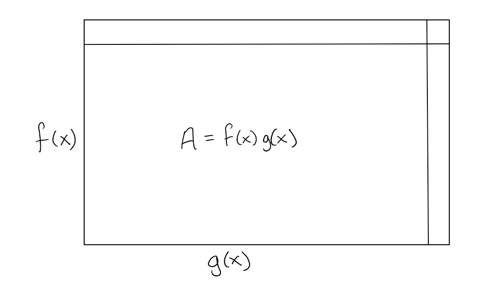
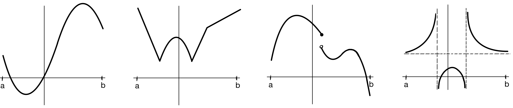

Print preview
Handout Day 10: Sections 3.3b and 4.1a: Derivative Rules (Part II) and Introduction to Absolute and Local Extrema
Last Time: We started looking at some derivative rules to help us take derivatives without the limit definition. In particular, we talked about the following rules:
The Power Rule: \(\displaystyle \frac{d}{dx}\,x^n =\) . The Constant Rule: \(\displaystyle \frac{d}{dx}\,c =\) .
The Constant Multiple Rule: \(\displaystyle \frac{d}{dx}\,[c \cdot f(x)] =\) .
The Sum/Subtraction Rule: \(\displaystyle \frac{d}{dx}\,[f(x) \pm g(x)] =\) .
The Exponent Rule: \(\displaystyle \frac{d}{dx}\,a^x =\) . Particularly, \(\displaystyle \frac{d}{dx}\,e^x =\) .
The Chain Rule: Suppose \(f\) and \(g\) are both differentiable functions. Then \(\displaystyle \frac{d}{dx}\,f(g(x)) =\) .
By applying the Chain Rule twice, we obtain
\begin{equation*}
\frac{d}{dx}\,f\bigl(g(h(x))\bigr) = \underline{\hspace{4in}}.
\end{equation*}
Today: We want to talk about our other two big rules, the Product Rule and the Quotient Rule, and do some more practice using rules in combination. We will also begin exploring applications of derivatives, starting with absolute and local extrema.
The Product Rule.
We want to know how to differentiate products of functions, i.e., functions like \(h(x) = f(x) \cdot g(x)\text{.}\)
Recall that products represent areas; suppose our functions \(f\) and \(g\) give the side lengths of the inner rectangle below:

The Product Rule: \(\displaystyle \frac{d}{dx}\,\bigl(f(x) \cdot g(x)\bigr) =\) \(+\) .
Problem 1.
Find \(f'(x)\text{,}\) given that \(\displaystyle f(x) = \left(x^2 + \frac{4}{x} - 5\right)\left(3\sqrt{x} - 2^x + \pi\right)\text{.}\)
The Quotient Rule.
The Product Rule also tells us how to deal with quotients of functions! Suppose we want to find \(Q'(x)\) when \(\displaystyle Q(x) = \frac{f(x)}{g(x)}\text{.}\) We don’t know how to do this, but we do know how to find the derivative of \(f(x) = Q(x) \cdot g(x)\text{:}\)
Now we can rearrange our terms to solve for \(Q'(x)\text{!}\)
The Quotient Rule: Where \(g(x) \neq 0\text{,}\) we have \(\displaystyle \frac{d}{dx}\,\left(\frac{f(x)}{g(x)}\right) =\) .
Problem 2.
Find \(\displaystyle \frac{d}{dx}\,\left(\frac{e^x - 2x^5 + 5\sqrt[3]{x} + 4}{\dfrac{1}{x^2} + e^{\pi}}\right)\text{.}\)
Differentiation Strategy.
To finish up the day, let’s spend some time talking about strategy and doing a few more examples. Here are some strategy points to remember:
-
Always start by identifying of the function you want to differentiate. Is it a product? Composition? Quotient? Are there multiple things happening? Making a plan will give you a direction.
-
While differentiating, always work from the !
-
Stay really organized. Color code, put things in boxes, take derivatives of of the function before plugging them into the , whatever works for you! Just make sure your work is clear to anyone who looks at it.
-
Make sure all are correctly placed, as they affect the meaning of the expression. Penalties apply to quizzes and exams.
Problem 3.
Now we can practice the Derivative Rules we’ve studied with the following functions. For each function, identify the rules to apply, in order. Feel free to work out the details and double-check against the provided answers.
-
\(\displaystyle f(x) = \frac{x e^x}{2x^2 - 3x + 9}\) — Two big rules: andAnswer: \(\displaystyle f'(x) = \frac{(e^x + x e^x)(2x^2 - 3x + 9) - x e^x(4x - 3)}{(2x^2 - 3x + 9)^2}\text{.}\)
-
\(\displaystyle g(t) = \left(3t^4 - \frac{1}{t} + 2\right)\left(2t^3 - 3^t - \pi^2\right)^7\) — Two big rules: andAnswer: \(\displaystyle g'(t) = \left(12t^3 + \frac{1}{t^2}\right)\left(2t^3 - 3^t - \pi^2\right)^7 + \left(3t^4 - \frac{1}{t} + 2\right) \cdot 7\left(2t^3 - 3^t - \pi^2\right)^6 \left(6t^2 - 3^t \ln(3)\right)\text{.}\)
-
(Exercise) \(\displaystyle h(t) = \left[\left(3t^4 - \frac{1}{t} + 2\right)\left(2t^3 - 3^t - \pi^2\right)\right]^7\) — Two big rules: andAnswer: \(\displaystyle h'(t) = 7\left[\left(3t^4 - \frac{1}{t} + 2\right)\left(2t^3 - 3^t - \pi^2\right)\right]^6 \cdot \left[\left(12t^3 + \frac{1}{t^2}\right)\left(2t^3 - 3^t - \pi^2\right) + \left(3t^4 - \frac{1}{t} + 2\right)\left(6t^2 - 3^t \ln(3)\right)\right]\text{.}\)
-
(Exercise) \(\displaystyle r(x) = \frac{(19x - \sqrt[4]{x} + 27)^5}{6x^2 - \pi^e}\) — Two big rules: andAnswer: \(\displaystyle r'(x) = \frac{5(19x - x^{1/4} + 27)^4 \left(19 - \frac{1}{4}x^{-3/4}\right)(6x^2 - \pi^e) - (19x - x^{1/4} + 27)^5(12x)}{(6x^2 - \pi^e)^2}\text{.}\)
Note: To find the derivative of \(\displaystyle \frac{f(x)}{g(x)}\text{,}\) we have \(2\) options here! We can also use the Product Rule and Chain Rule only, without using the Quotient Rule.
Preview and Definition: Absolute / Global Extrema.
(Preview) Next, we explore how derivatives can be used to determine the absolute/local maxima/minima of a function.
We use the word extremum to refer to a maximum or minimum without specifying which it is.
Latin lesson of the day: For the words “maximum,” “minimum,” and “extremum,” the ending “-um” is singular and the ending “-a” (for example, “minima”) is plural.
Definition: A function \(f(x)\) has an absolute/global maximum (minimum) value at \(x = c\) if \(f(c)\) is the largest (smallest) value of \(f\) anywhere .
That is,
-
\(f\) has an absolute/global imum value at \(c\) if \(f(c)\) \(f(x)\) for all \(x\) in the (given) of \(f\text{.}\)Graphically, this is the point on the graph over its (given) .
-
\(f\) has an absolute/global imum value at \(c\) if \(f(c)\) \(f(x)\) for all \(x\) in the (given) of \(f\text{.}\)Graphically, this is the point on the graph over its (given) .
Problem 4.
Note: This problem has three parts. For each part, two of the graphs are assigned as exercises.
-
For each graph, does \(f(x)\) have an absolute minimum and an absolute maximum on \([a,b]\text{?}\) If so, where?

-
For each graph, does \(f(x)\) have an absolute minimum and an absolute maximum on \((a,b)\text{?}\) If so, where?
Notes.
-
Finding the absolute maximum or minimum of a function can be a difficult task, especially algebraically.
-
Recall that only tell us about the behavior of a function at a point, so we use them alone to find the absolute/global extrema of a function.
-
However, are very useful in finding extrema, so this is often a great way to start.
Definition: Local Extrema.
Definition: A local maximum (minimum) point is a point which is at least as () as the points .
That is,
-
\(f\) has a local maximum value at \(c\) if \(f(c)\) \(f(x)\) for \(x\) in some small open containing \(c\) (or a interval, if \(c\) is an endpoint of a closed or half-open interval domain).Graphically, this corresponds to the point inside a tall, narrow that contains the point (or has it on its boundary).
-
\(f\) has a local minimum value at \(c\) if \(f(c)\) \(f(x)\) for \(x\) in some small open containing \(c\) (or a interval, if \(c\) is an endpoint of a closed or half-open interval domain).Graphically, this corresponds to the point inside a tall, narrow that contains the point (or has it on its boundary).
Note: Absolute/global extrema are also local extrema, but the reverse is not necessarily true.
Problem 4 (cont.).
iii) For each graph, mark the points that are local maxima and local minima on the interval \([a,b]\text{.}\)
![Runestone Academy logo]()
![MathJax logo]()